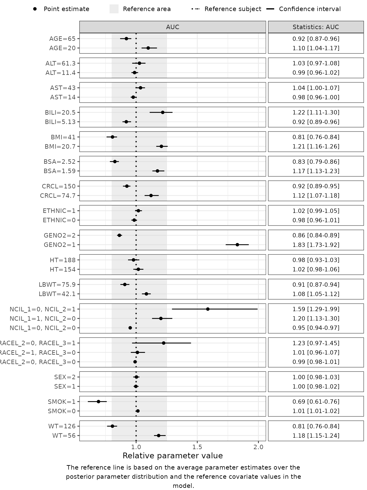

3. Deep Dive: Secondary Parameters
Part3-deep-dive-secondary-parameters.Rmd
suppressPackageStartupMessages({
library(PMXFrem)
library(PMXForest)
library(ggplot2)
library(data.table)
})
theme_set(theme_bw(base_size = 14))
set.seed(865765)Introduction
A FREM Forest plot or explained-variability plot usually shows model parameters – CL, V, an absorption term. Often the quantity of clinical interest is a secondary parameter derived from those: an exposure AUC over a dosing interval, a terminal half-life, a steady-state Cmax.
createFREMParamFunction() transliterates the FREM model’s $PK into an R parameter function. Its secondary argument – identical to [PMXForest::createParamFunction()]’s – attaches the derived quantities in the same call, so the whole function (structural part and secondary part) is one object that getForestDFFREM() and getExplainedVar() consume directly.
Each secondary entry names a variable to add to the return list; its value is one of
- a line of R code –
secondary = list(AUC = "dose / CL"); - the path to an
.Rfile of arbitrary code, including anmrgsolvesimulation –secondary = list(CMAX = "cmax.R"); or - a list with that
sourceplus any constants the code needs –secondary = list(CMAX = list(source = "cmax.R", dose = 100, tau = 12)). Each constant is bound (dose <- 100,tau <- 12) immediately before the code, inside the samelocal()block. A bare string is justsourcewith no constants.
The generated FREM function has the signature function(basethetas, covthetas, dfrow, etas = rep(0, ...), ...). A secondary block sees basethetas, covthetas, dfrow (also aliased as df, so a snippet written for the SCM version ports over), etas, ..., any call-site constants, and every structural parameter by name. etas = 0 gives the forest-plot (typical) value; non-zero etas gives the value used by an explained-variability plot – the same function serves both.
The two parts below are independent:
-
Part 1 derives
AUCand a half-life in closed form. No compiled dependencies – the code and output on this page are from a live run. -
Part 2 computes a steady-state
Cmaxwith anmrgsolvesimulation. It is shown but not executed; the outputs are illustrative.
Part 1 – closed-form secondary parameters
1.1 Locate the FREM model
runname <- "run31"
modDevDir <- system.file("extdata/SimNeb", package = "PMXFrem")
fremFiles <- getFileNames(modName = runname, modDevDir = modDevDir)1.2 Generate the parameter function with secondaries
AUC is a config list – source is a one-liner and dose (100 mg) is supplied at the call site. For a linear model the single-dose AUC is dose / CL. THALF is a bare snippet that uses CL and V.
out <- createFREMParamFunction(
fremModel = fremFiles$mod,
parameters = c("CL", "V", "MAT"),
secondary = list(
AUC = list(source = "dose / CL", dose = 100),
THALF = "log(2) * V / CL"
),
quiet = TRUE
)
out$functionListName # CL, V, MAT, then the secondaries
#> [1] "CL" "V" "MAT" "AUC" "THALF"
out$primaryNames
#> [1] "CL" "V" "MAT"
out$secondaryNames
#> [1] "AUC" "THALF"numSkipOm and numNonFREMThetas were derived from the model and its .ext (via fremModelInfo()); nothing had to be passed by hand.
The tail of the generated source – the constant binding, then each entry in its own local() block, then the extended return list:
[1] " ## AUC (inline snippet)"
[2] " AUC <- local({"
[3] " dose <- 100"
[4] "dose / CL"
[5] " })"
[6] " ## THALF (inline snippet)"
[7] " THALF <- local({ log(2) * V / CL })"
[8] ""
[9] " list("
[10] " CL = CL,"
[11] " V = V,"
[12] " MAT = MAT,"
[13] " AUC = AUC,"
[14] " THALF = THALF"
[15] " )"
[16] "}" 1.3 Sanity-check at the final estimates
fun <- eval(parse(text = out$code))
dfExt <- subset(getExt(extFile = fremFiles$ext), ITERATION == "-1000000000")
thetas <- as.numeric(dfExt[1, grep("^THETA", names(dfExt))])
base <- thetas[seq_len(out$noBaseThetas)]
fun(
basethetas = base, covthetas = rep(0, out$numParCov), dfrow = data.frame(),
etas = rep(0, out$numSkipOm + out$numParCov)
)
#> $CL
#> [1] 6.14514
#>
#> $V
#> [1] 122.525
#>
#> $MAT
#> [1] 1.88694
#>
#> $AUC
#> [1] 16.27302
#>
#> $THALF
#> [1] 13.820331.4 The Forest plot
createFREMParamFunction() returns one function that yields a named list; getForestDFFREM() takes it as a one-element functionList with functionListName = out$functionListName, and the covariate scenarios are built the usual way. The model is located by runno / modDevDir, so numNonFREMThetas, numSkipOm and covNames are all derived.
covNames <- getCovNames(modFile = fremFiles$mod)
data <- fread(
system.file("extdata/SimNeb/DAT-2-MI-PMX-2-onlyTYPE2-new.csv", package = "PMXFrem")
)
dfCovs <- setupDfCovs(
data = data,
covariates = covNames$orgCovNames,
probs = c(0.05, 0.95),
idVar = "ID",
missVal = -99
)
dfParameters <- getSamples(fremFiles$cov, extFile = fremFiles$ext, n = 50)
dfres <- getForestDFFREM(
dfCovs = dfCovs,
runno = 31,
modDevDir = modDevDir,
dfParameters = dfParameters,
functionList = list(fun),
functionListName = out$functionListName,
quiet = TRUE
)
unique(dfres$PARAMETER)
#> [1] CL V MAT AUC THALF
#> Levels: CL V MAT AUC THALF
forestPlot(
dfres[dfres$PARAMETER == "AUC", ],
plotRelative = TRUE,
keepYlabs = TRUE,
rightStrip = FALSE
) +
ggtitle("AUC vs. reference")
1.5 The same function in an explained-variability plot
getExplainedVar() calls the parameter function with non-zero etas to propagate the FREM covariance. Because the secondary names are in functionListName, AUC and THALF get an explained-variability row for free – no second function to write, no risk of the two drifting apart.
dfCovsEV <- setupDfCovsEV(fremFiles$mod)
ev <- getExplainedVar(
type = 1,
data = data,
dfCovs = dfCovsEV,
functionList = list(fun),
functionListName = out$functionListName,
runno = 31,
modDevDir = modDevDir,
quiet = TRUE
)
# ev now carries TOTVAR / covariate contributions for CL, V, MAT, AUC and THALFPart 2 – a simulation-based secondary with mrgsolve
The code in this part is not executed when the vignette is built. The outputs shown are illustrative, not from a live run. The code is runnable, but you must have a working mrgsolve installation first – which needs a C++ toolchain (Rtools on Windows, the Xcode command-line tools on macOS, r-base-dev / build-essential on Linux), because mrgsolve compiles each model on first use.
mrgsolve version. The example file uses only long-stable core API – mcode_cache(), param(), ev(), mrgsim_df() – and the basic $PARAM / $CMT / $ODE / $TABLE / $CAPTURE blocks, so it needs no version-specific features. Checked on mrgsolve 1.0.9; any mrgsolve >= 1.0.0 should be enough. The current CRAN release is 2.0.1 and these calls are unchanged across the 1.x -> 2.x boundary, so the latest version is not required.
PMXForest ships a worked example at system.file("secondary-cmax-mrgsolve.R", package = "PMXForest") – a one-compartment oral model that simulates a course of doses and returns the steady-state Cmax. It is written against df (not dfrow), which is why createFREMParamFunction() emits df <- dfrow at the top of the generated function: the same file works from both createParamFunction() and createFREMParamFunction().
Pass it as a config-list source, with the regimen constants:
cmaxFile <- system.file("secondary-cmax-mrgsolve.R", package = "PMXForest")
out <- createFREMParamFunction(
fremModel = fremFiles$mod,
parameters = c("CL", "V", "MAT"),
secondary = list(
CMAX = list(source = cmaxFile, dose = 80, tau = 24, n = 7)
),
quiet = TRUE
)
out$functionListName
#> [1] "CL" "V" "MAT" "CMAX"The tail of the generated source carries the constants, then df <- dfrow, then the file’s text spliced in verbatim (re-indenting it would corrupt the multi-line mrgsolve model string):
df <- dfrow # alias for secondary code
...
## ---- secondary parameters ----
## CMAX (inlined from secondary-cmax-mrgsolve.R)
CMAX <- local({
dose <- 80
tau <- 24
n <- 7
# ... file header ...
.mod <- mrgsolve::mcode_cache("pmxforest_secondary_1cmt_oral", .code)
# ...
.lastInterval <- subset(.sim, time >= (n - 1) * tau)
max(.lastInterval$CP)
})
list(CL = CL, V = V, MAT = MAT, CMAX = CMAX)Evaluated at the final estimates for a reference subject:
fun <- eval(parse(text = out$code))
fun(basethetas = base, covthetas = rep(0, out$numParCov), dfrow = data.frame(),
etas = rep(0, out$numSkipOm + out$numParCov))
#> $CL
#> [1] ...
#> $CMAX
#> [1] 0.37 # ng/mL, illustrativeThen the Forest plot, exactly as in Part 1 – mrgsolve must be loaded on the worker processes, hence cstrPackages:
dfres <- getForestDFFREM(
dfCovs = dfCovs,
runno = 31,
modDevDir = modDevDir,
dfParameters = dfParameters,
functionList = list(fun),
functionListName = out$functionListName,
cstrPackages = c("PMXFrem", "mrgsolve"),
quiet = TRUE
)
forestPlot(dfres[dfres$PARAMETER == "CMAX", ], plotRelative = TRUE,
keepYlabs = TRUE, rightStrip = FALSE)mrgsolve::mcode_cache() keeps the compiled model on disk between calls; the parameter function runs once per covariate row per sample, so recompiling every call would dominate the run.
Notes
-
Verification.
verifyFREMParamFunction()checks the structural part of the generated function against [PMXForest::createParamFunction()] on the same FREM model, plus thecovthetas/etasscaling. It checks only the$PKparameters – a secondary such asAUChas no structural counterpart – so a function with secondaries still verifies cleanly. -
Snippet vs. file vs. config list. A string is a file when it exists on disk; a string that looks like a path (
.R/.r) but does not exist is an error, not a silently mistyped snippet. A list entry needs a single-stringsource; every other element must be a named, atomic constant. -
Constant names. A call-site constant shadows a
$PKvariable of the same name inside that entry’slocal()block. Reusable files use dotted names (.dose) or anexists(name, inherits = FALSE)guard to stay clear of the structural namespace.